Projects
Five projects, from CAD models to research data, that show how I like to build and problem-solve.
Gesture-Controlled 6-Axis Robotic Arm
A robotic arm that mimics human arm movement, controlled entirely through gestures.
Overview
This project was about designing, manufacturing, and integrating a robotic arm that mimics human arm movement using gesture-based control. It pulled together mechanical design, CAD, electronics, manufacturing, and embedded systems into one working system, and honestly it's the project that made me fall in love with robotics.
Skills & Tools
My Contributions
- Modeled every mechanical component in SolidWorks, paying close attention to tolerances, mounting interfaces, and structural rigidity
- Went through multiple design passes to get motors fitting properly inside the links while keeping everything strong and lightweight
- Integrated the electronics, including servo motors, power distribution, controllers, and wiring, planning the internal routing right in CAD
- Tested range of motion, repeatability, structural stability, and joint alignment, refining the arm after every round
Key Features / Design Highlights
- Six independent degrees of freedom so the arm can rotate and articulate similarly to a human arm
- Servo motors mounted directly into custom-designed structural components
- Parts designed specifically for 3D printing to cut down print time, reduce support material, and hold up better over time
- Fasteners, bearings, shafts, and servo mounts all built into the CAD models so everything fit together on assembly
Challenges & Solutions
Getting the motors to fit properly inside the links while keeping enough strength and not adding excess weight took several rounds of redesigning. Wire routing was its own headache too, so I planned it directly into the CAD models to keep things clean and stop wires from catching on the moving joints.
Outcome
I ended up with a complete robotic arm that shows off mechanical design, CAD modeling, design for manufacturing, robotics integration, electromechanical assembly, rapid prototyping, and a lot of iterative problem solving along the way.

Live Patient Vitals Monitoring Enclosure
Engineering a housing that keeps a real-time patient monitoring system organized and protected.
Overview
For this one I designed a custom housing for a real-time patient monitoring system. The sensing electronics themselves weren't mine to design, so the real challenge was engineering an enclosure that could securely organize, protect, and integrate every electronic component needed for continuous physiological monitoring.
Skills & Tools
My Contributions
- Designed the internal layout to house circuit boards, processing hardware, displays, connectors, wiring, power components, and biomedical sensors
- Built in custom mounting features like standoffs, screw bosses, alignment features, cable routing channels, ventilation openings, removable panels, and fastener locations
- Iterated the design several times to improve component fit, internal clearances, and how easy it was to assemble
Key Features / Design Highlights
- An organized internal layout that houses all the electronics without wasting space
- Removable panels so it can be maintained, upgraded, or troubleshot without tearing the whole thing apart
- Ventilation openings and routing channels that help with heat dissipation and keep cables tidy
Challenges & Solutions
The hardest part was balancing heat dissipation, structural rigidity, accessibility, and portability while still keeping the whole thing manufacturable. It took a few rounds of iteration to get the component fit and internal clearances right and to make assembly simpler.
Outcome
I delivered a fully integrated enclosure that pulls together biomedical device packaging, mechanical enclosure design, CAD modeling, design for assembly, electronics integration, tolerance analysis, and rapid prototyping.
Gallery / Links
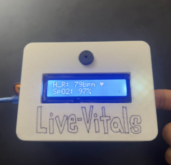
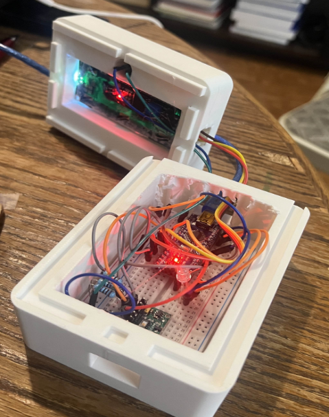
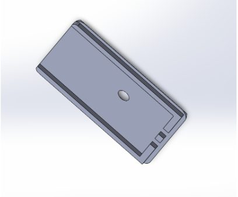
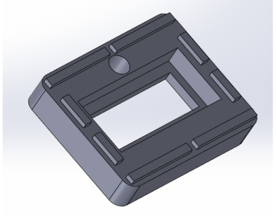
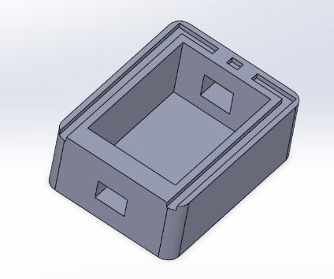
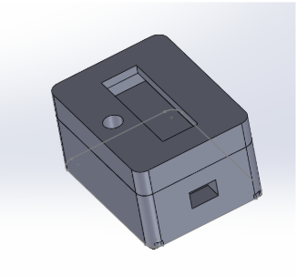
VADER Sentiment & Movement Analysis
Using sentiment analysis to understand how people experience dancing and movement, with and without music.
Overview
This is an interdisciplinary biomechanics and data analysis research project I worked on through LABSYNC at Northeastern, looking at how emotional experiences relate to human movement. Participants ran through structured movement and dancing tasks, some with music and some without, and then wrote about how the experience felt to them.
Skills & Tools
My Contributions
- Organized the experimental datasets and preprocessed participants' written responses
- Applied VADER, a natural language processing tool, to turn those written responses into numerical sentiment scores
- Compared those sentiment scores against measures of motor behavior variability recorded during the movement tasks
- Ran statistical analyses and presented the findings through figures, graphs, and research presentations
Key Features / Design Highlights
- Turns qualitative, written responses into quantitative sentiment data that can actually be analyzed statistically
- Connects emotional valence to movement quality, coordination, consistency, and variability
- Brings together biomechanics, psychology, natural language processing, and statistics in one project
Challenges & Solutions
The tricky part was comparing two very different kinds of data: sentiment scores pulled from text and motor variability data pulled from movement. Getting those two datasets to line up meant a lot of careful preprocessing and cross-referencing before any real statistical relationships could be pulled out.
Outcome
This work helped build a better understanding of how music shapes both emotional well-being and physical movement, and it showed how tools like sentiment analysis can add a lot to biomechanics research.
Wearable IMU Running Biomechanics Analysis
Studying running mechanics through wearable inertial sensors and signal processing.
Overview
This research project uses wearable inertial measurement units, or IMUs, to study running mechanics and get a better handle on human movement while running. IMUs pack accelerometers and gyroscopes that constantly record linear acceleration, angular velocity, and orientation through a runner's gait cycle, which adds up to a huge amount of time-series biomechanical data.
Skills & Tools
My Contributions
- Processed raw sensor data collected from wearable devices attached to runners at different body locations
- Cleaned, filtered, synchronized, segmented, and normalized the signals before doing any biomechanical analysis
- Evaluated gait characteristics like cadence, stride timing, impact patterns, movement variability, symmetry, and stability
- Used statistical analysis and computational methods to compare runners and visualize trends
Key Features / Design Highlights
- Handles large, high-frequency time-series datasets coming straight off wearable sensors
- Pulls a full set of gait metrics like cadence, stride timing, impact, symmetry, and consistency out of raw signals
- Surfaces biomechanical patterns tied to running performance, injury risk, fatigue, and efficiency
Challenges & Solutions
Raw IMU signals needed a lot of work before they were actually usable. Cleaning, filtering, synchronizing, segmenting, and normalizing all had to happen first, so I built a structured signal-processing pipeline that could handle the scale and noise that comes with wearable sensor data.
Outcome
Pairing wearable sensing with computational analysis gave real insight into athletic performance and running mechanics, and it let me show off biomechanics research, signal processing, and quantitative analysis on a genuinely large, real-world dataset.
Taste of the North End
A sensory-friendly cooking game built for the Boston Children's Museum.
Overview
This was a semester-long Cornerstone of Engineering II project built for the Boston Children's Museum. The goal was to design and build a large, interactive, sensory-friendly cooking game that teaches kids ages 4 to 8 about traditional North End recipes through hands-on play, pulling together mechanical engineering, electronics, CAD, manufacturing, programming, and user-centered design into one working exhibit.
Skills & Tools
My Contributions
- Helped design more than 80 custom SolidWorks components, from ingredients and utensils to mechanical features and structural hardware
- Contributed to the Arduino-based control system that identifies RFID-tagged ingredients and checks recipe steps
- Ran validation testing for durability, sensor reliability, gameplay flow, safety, and accessibility
- Helped put together technical documentation, engineering reports, and demonstrations
Key Features / Design Highlights
- A custom-built kitchen structure with prep stations, a cooking pot, storage compartments, and an oven that reveals the finished dish
- Each ingredient carries an RFID tag that the cooking pot's reader checks against the recipe in real time
- Immediate feedback through LEDs and sounds, with a 3D-printed meal revealed once the recipe's done right
- Gameplay built around six traditional North End recipes
Challenges & Solutions
Fitting and assembling more than 80 individual components so everything worked together safely and reliably for young users took a lot of careful dimensioning, iteration, and testing. The exhibit also had to survive repeated public use in a museum, so we ran durability and sensor-reliability testing before it went on display.
Outcome
The exhibit went from concept to design, fabrication, testing, and refinement, and eventually to public demonstration at the Boston Children's Museum, showing off mechanical design, embedded systems, RFID integration, and engineering validation for hardware that real kids get to touch and play with.
Gallery / Links
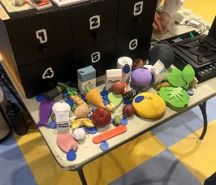
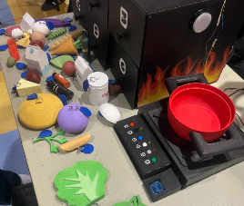
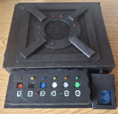
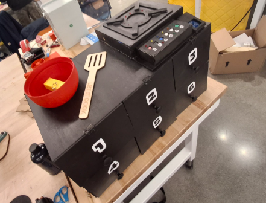
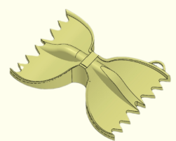
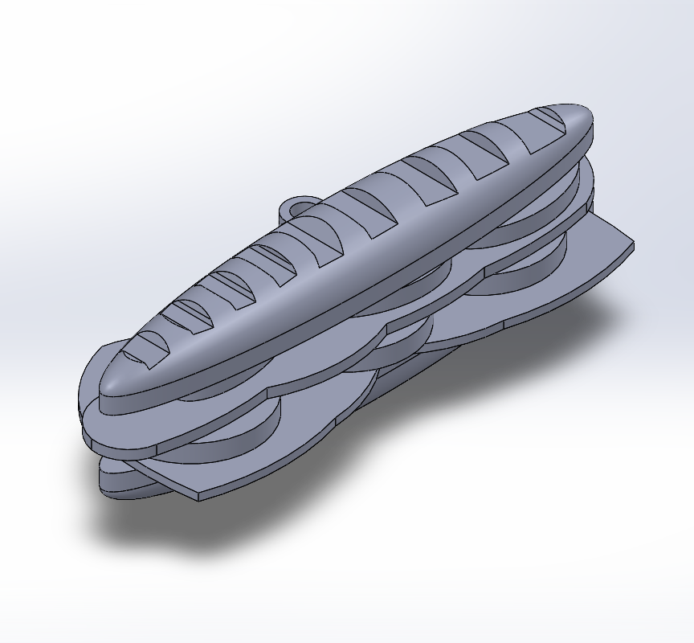